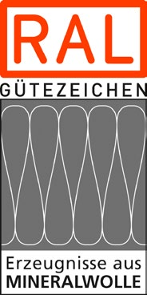

Diese DGUV Information beschreibt Arbeitsschutzmaßnahmen bei Tätigkeiten mit Mineralwolle-Dämmstoffen.
Seit 01.06.2000 gilt in Deutschland ein Verbot des Herstellens, des Inverkehrbringens und des Verwendens von Mineralwolle-Dämmstoffen, die nicht die Freizeichnungskriterien des Anhang II Nr. 5 der Gefahrstoffverordnung erfüllen.
Dieser Sachverhalt macht es notwendig, in der Praxis grundsätzlich von zwei Typen von Mineralwolle-Dämmstoffen zu sprechen, nämlich von sogenannten "neuen" und sogenannten "alten", seit Juni 2000 verbotenen, Produkten.
In Deutschland stehen mit dem RAL-Gütezeichen gekennzeichnete Produkte zur Verfügung. Hiermit wird die Erfüllung der Freizeichnungskriterien des Anhangs II Nr. 5 der Gefahrstoffverordnung dokumentiert. Es wird empfohlen, diese Produkte zu verwenden.
Bei der Verarbeitung mit dem RAL-Gütezeichen gekennzeichneter Produkte sind lediglich die Mindestmaßnahmen zum Schutz der Beschäftigten vor Stäuben nach der TRGS 500 "Schutzmaßnahmen" zu ergreifen. Diese Maßnahmen sind in Kapitel 4 dieser DGUV Information beschrieben.
Der Umgang mit "alten" Mineralwolle-Dämmstoffen ist nur im Zuge von Demontage-, Abbruch-, Instandhaltungs- und Instandsetzungsarbeiten möglich bzw. zulässig. Für solche Arbeiten gilt die TRGS 521 "Abbruch-, Sanierungs- und Instandhaltungsarbeiten mit alter Mineralwolle". Diese wird in der vorliegenden DGUV Information in Kapitel 5 praxisorientiert erläutert.
